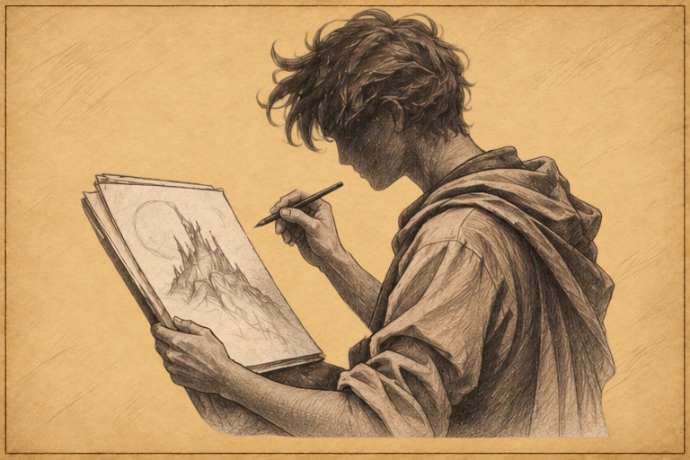
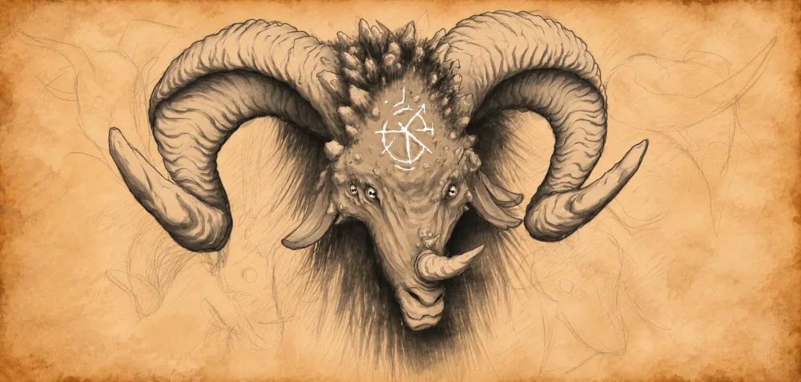
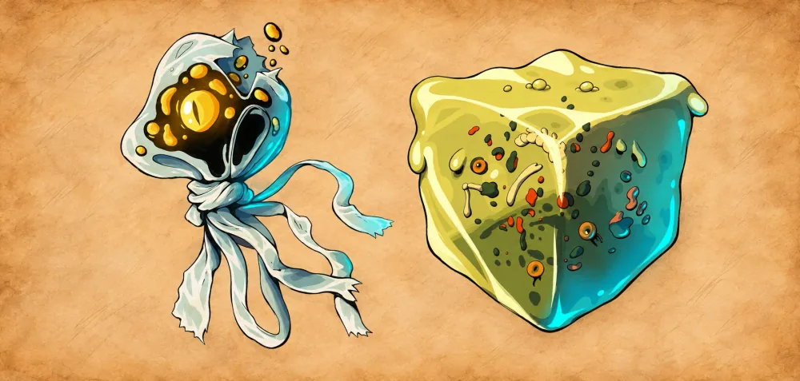
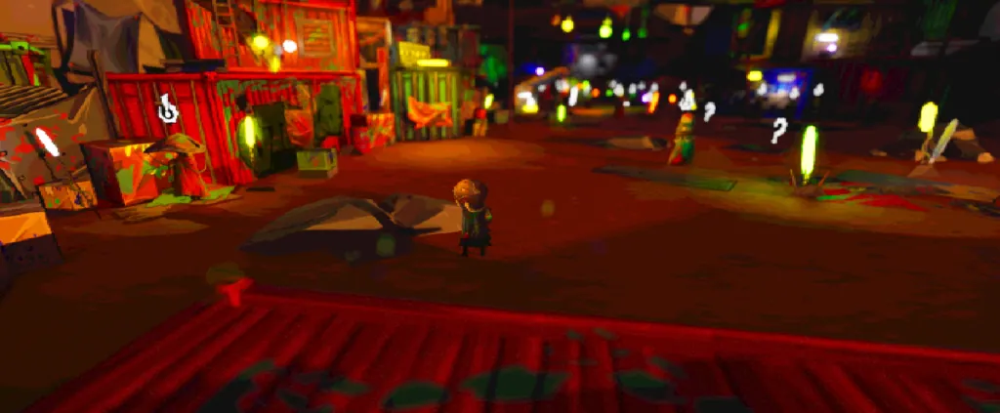

Worlds drawn from folklore.
I'm Matyáš Galda, a Game Design student at Tomas Bata University in Zlín. My concept art combines digital painting and photobashing with history, culture and impossible proportions.
Selected work

01 Last Breath
An original game concept inspired by tenth-century Slavic, Celtic and Nordic folklore, with creature studies.

02 Forgotten Realms
Artwork and visual style for an original board game, made as a semester project.

03 Ferrugo
An open-world action prototype in Unreal Engine 5 that switches between 2D and 3D play.
About
I'm studying Game Design at the Faculty of Multimedia Communications, Tomas Bata University in Zlín. I like working with unrealistic proportions, folklore and technology, and I lean on cultures, history and historic events to make the imagined parts of my art feel real.
I work both on my own and in a team, and I pick up new tools quickly.
CV
Education
Tomas Bata University in Zlín
Faculty of Multimedia Communications
Game Design, Bachelor of Arts programme
Currently studying · expected 2028
Skills
- 2D creation and concept art
- Digital painting and photobashing
- 3D modelling
- Animation
- Unreal Engine
- Unity
- Photogrammetry
Languages
- English
- Polish
- German
Contact
For questions about my work or a collaboration, write to me.
matyasgalda@gmail.com